Vos parcelles sont la base de tout le carnet de champ : chaque culture est placée sur une ou plusieurs parcelles, et chaque traitement est encodé sur une parcelle. Ce chapitre explique comment les créer, les retrouver, les modifier et les supprimer depuis la page Parcelles. Le travail sur la carte (dessiner un contour, placer un point, le parcellaire PAC) est expliqué au chapitre 6.
Trois façons de créer vos parcelles
Méthode
Quand la choisir
Ce que vous obtenez
Importer un fichier GML
Vous avez rentré votre déclaration de superficie (PAC) sur PAC on Web : c'est le plus rapide, toutes vos parcelles arrivent d'un coup.
Le contour exact de chaque parcelle, et sa superficie.
Dessiner sur la carte
Vous n'avez pas de fichier GML, mais vous savez repérer vos parcelles sur une carte ou une vue satellite.
Le contour que vous avez tracé (chapitre 6).
Par adresse
Pour aller vite, ou pour une serre, un hangar, une installation qui a une adresse.
Un point à l'adresse choisie, sans contour.
Pourquoi bien localiser vos parcelles ?Le registre doit indiquer où chaque produit a été utilisé. Appi'Field reprend dans vos exports l'adresse ou les coordonnées de chaque parcelle. Plus la parcelle est bien placée, plus votre registre est précis.
La page « Mes parcelles »
Cliquez sur Parcelles dans le menu.
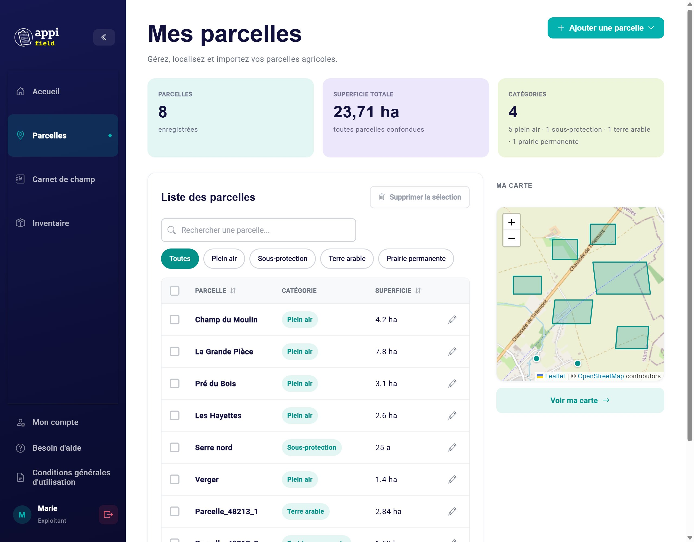
La page « Mes parcelles ».
Les trois chiffres du haut
Parcelles : le nombre de parcelles enregistrées.
Superficie totale : la somme de toutes vos parcelles, en hectares. Les parcelles encodées en ares ou en m² sont converties automatiquement.
Catégories : le nombre de catégories utilisées, et combien de parcelles dans chacune.
La liste des parcelles
Chaque ligne montre le nom de la parcelle, sa catégorie et sa superficie, avec un crayon pour la modifier. La liste affiche 20 parcelles par page ; les flèches en bas passent à la page suivante.
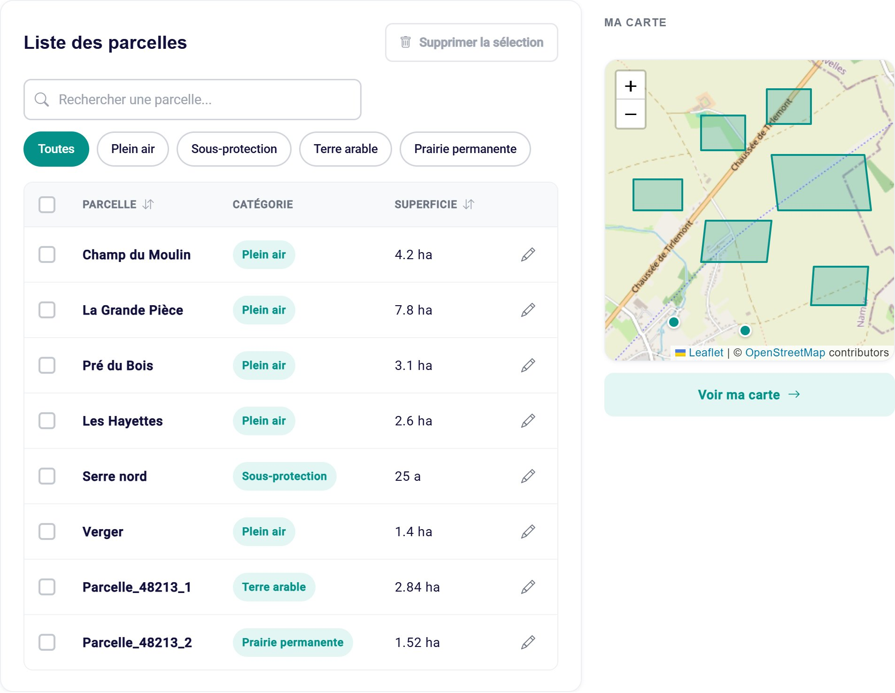
La liste, avec deux parcelles importées d'un fichier GML (en bas).
Pour…
Faites ceci
Retrouver une parcelle
Tapez une partie de son nom dans « Rechercher une parcelle… ». La croix vide la recherche.
N'afficher qu'une catégorie
Cliquez sur la catégorie (« Plein air », « Sous-protection »…). Toutes réaffiche tout. Seules les catégories que vous utilisez apparaissent.
Trier
Cliquez sur le titre de la colonne Parcelle (ordre alphabétique) ou Superficie. Un premier clic trie dans un sens, un deuxième dans l'autre, un troisième annule le tri.
Voir les parcelles sur une carte
La petite carte à droite montre toutes vos parcelles. Voir ma carte ouvre la grande carte (chapitre 6).
Le tri par superficieIl compare les nombres tels qu'ils sont affichés, sans tenir compte de l'unité : une parcelle de « 25 a » (0,25 ha) est classée après une parcelle de « 7,8 ha ». Si vous mélangez les unités, gardez-le en tête.
Aucune parcelle pour l'instant ?
Tant que vous n'avez créé aucune parcelle, la page affiche « Aucune parcelle n'a été détectée ». Le bouton Créer ma première parcelle ouvre directement le formulaire « par adresse ». Pour dessiner ou importer, utilisez plutôt le bouton Ajouter une parcelle en haut à droite.
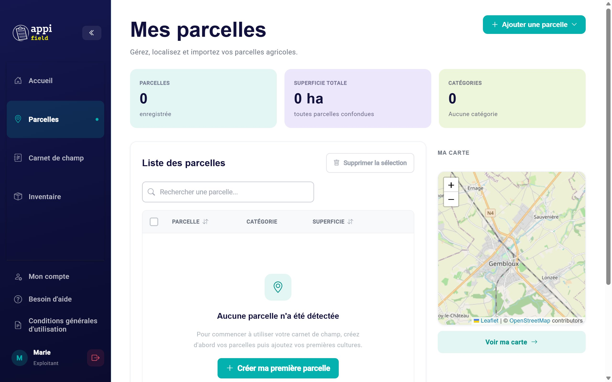
Ajouter une parcelle
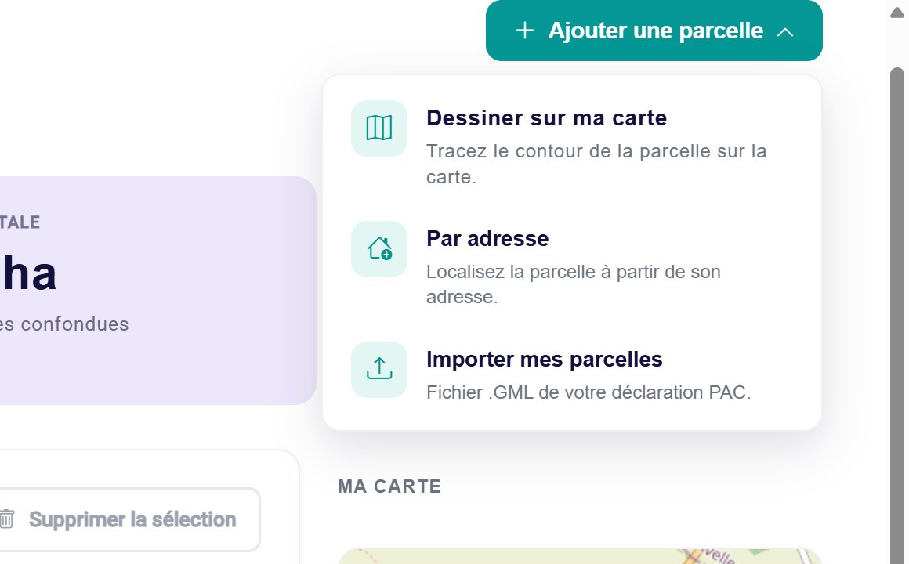
Le menu « Ajouter une parcelle ».
Cliquez sur Ajouter une parcelle, en haut à droite. Trois choix apparaissent :
Dessiner sur ma carte : ouvre la grande carte, où vous tracez le contour (chapitre 6) ;
Par adresse : ouvre le formulaire décrit ci-dessous ;
Importer mes parcelles : charge un fichier .GML (voir plus loin).
Ajouter une parcelle par adresse
Ajouter une parcelle › Par adresse.
Tapez le nom de la parcelle et sa superficie, et choisissez l'unité.
Tapez le début de l'adresse (au moins 3 lettres), puis cliquez sur la bonne adresse dans la liste qui apparaît.
Choisissez une catégorie.
Cliquez sur Enregistrer. Le message « La parcelle … a été créée avec succès ! » confirme l'enregistrement.
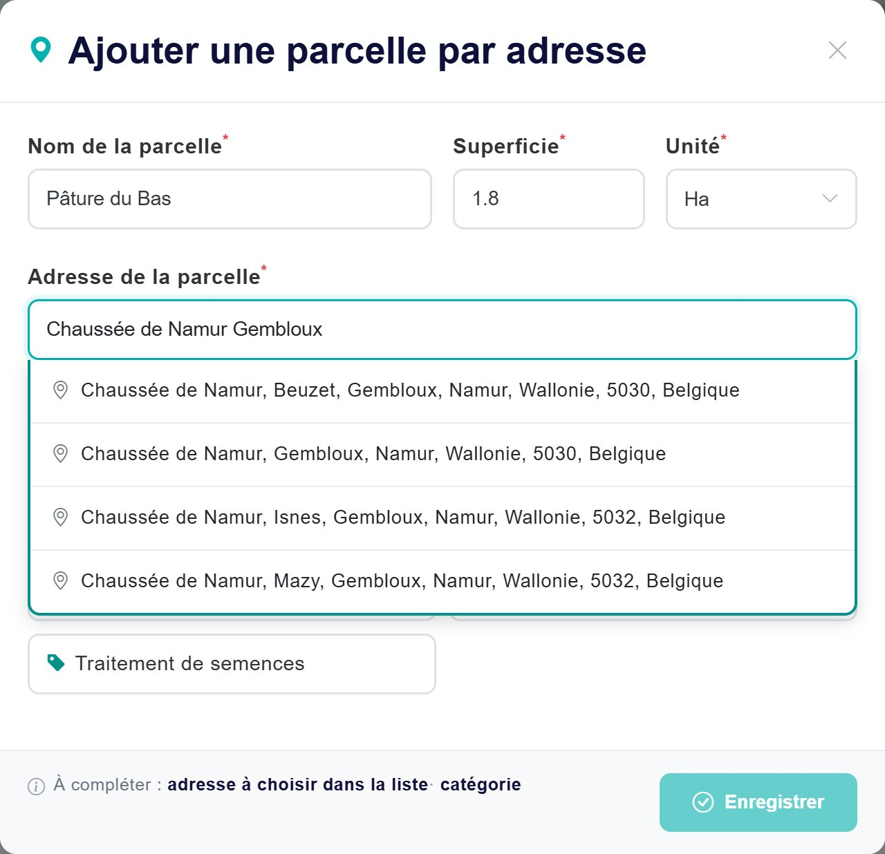
Après quelques lettres, les adresses trouvées s'affichent : cliquez sur la bonne.
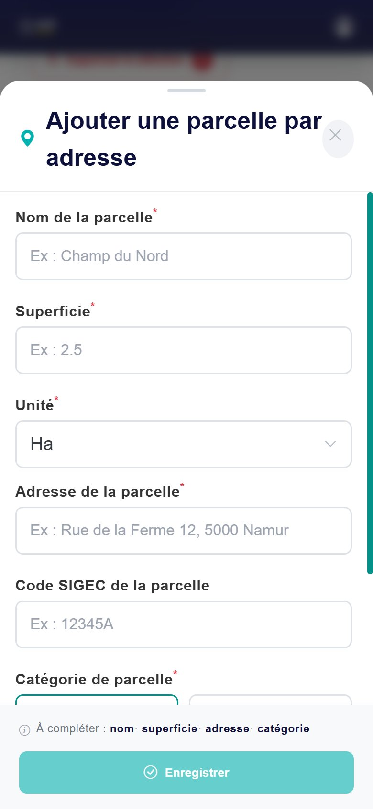
Sur smartphone, le formulaire s'ouvre en panneau.
Les champs du formulaire
Champ
Ce qu'il faut mettre
Nom de la parcelle*
Le nom que vous utilisez au quotidien (« Champ du Moulin », « Serre nord »…). C'est lui qui apparaîtra dans le carnet et dans le registre : choisissez un nom clair.
Superficie*
Un nombre, par exemple 2.5.
Unité*
Ha (hectare), A (are) ou M² (mètre carré). Pour rappel : 1 ha = 100 a = 10 000 m².
Adresse de la parcelle*
Une adresse en Belgique, à choisir dans la liste proposée (5 propositions au maximum). Si la rue exacte n'existe pas, choisissez la rue ou le village le plus proche.
Catégorie de parcelle*
Plein air, Sous-protection (serre, tunnel) ou Traitement de semences. La catégorie sert uniquement à trier et filtrer vos parcelles : elle n'apparaît pas dans le registre.
L'adresse doit être choisie dans la listeTaper l'adresse ne suffit pas : il faut cliquer sur une des propositions. C'est elle qui place la parcelle sur la carte. Si vous retouchez l'adresse après l'avoir choisie, il faut la choisir à nouveau.
Une parcelle créée par adresse est représentée par un point sur la carte, à l'adresse choisie. Pour avoir son contour exact, dessinez-la plutôt sur la carte (chapitre 6).
Si quelque chose ne va pas
Tant qu'il manque une information, le bouton Enregistrer reste pâle. Sous le formulaire, la ligne « À compléter : … » liste ce qui manque.
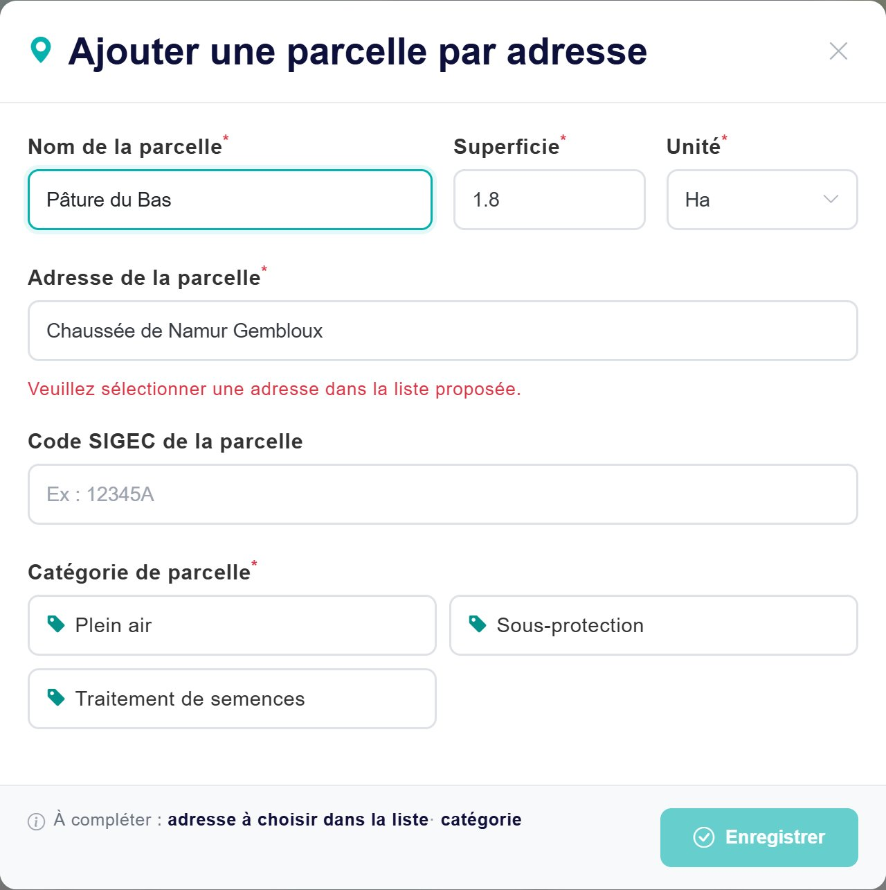
L'adresse a été tapée mais pas choisie dans la liste, et la catégorie manque.
Message
Que faire ?
« Champ obligatoire. »
Remplissez ce champ.
« Veuillez sélectionner une adresse dans la liste proposée. » « À compléter : adresse à choisir dans la liste »
Cliquez dans le champ adresse, attendez les propositions et cliquez sur l'une d'elles. Aucune proposition ? Tapez moins de mots (la rue et la commune suffisent).
« Erreur lors de l'ajout de la parcelle. Veuillez réessayer. »
Vérifiez votre connexion internet et réessayez.
Importer vos parcelles depuis votre déclaration PAC (fichier GML)
Un fichier GML est un fichier qui contient le dessin de vos parcelles. Depuis 2026, PAC on Web permet de l'exporter pour l'utiliser dans un logiciel de carnet de champ comme Appi'Field.
1. Récupérer le fichier sur PAC on Web
Connectez-vous à PAC on Web (application eDS de déclaration de superficie) avec votre carte d'identité, itsme ou un code reçu par SMS.
Ouvrez votre déclaration. L'export GML est disponible après la soumission de la déclaration.
Cliquez sur Sauver : PAC on Web conseille de sauvegarder avant d'exporter, pour obtenir un fichier complet.
Cliquez sur l'icône Exporter et choisissez le format GML. Enregistrez le fichier sur votre ordinateur (souvent dans le dossier Téléchargements).
Le navigateur bloque l'export ?Le manuel de PAC on Web précise que, pour certains exports, il faut autoriser votre navigateur à ouvrir les fenêtres « pop-up ». Pour toute question sur PAC on Web, consultez son manuel d'aide sur le portail de l'agriculture wallonne.
Appi'Field reconnaît aussi le fichier GML de la MAEC « sol » (MR14), celui que vous importez dans Requacarto.
2. L'importer dans Appi'Field
Sur la page Parcelles : Ajouter une parcelle › Importer mes parcelles.
Une fenêtre de votre ordinateur s'ouvre : choisissez le fichier .gml (10 Mo maximum) et cliquez sur Ouvrir.
Patientez quelques secondes. Le message « Import réussi ! … parcelles importées. » indique combien de parcelles ont été créées.
3. Ce que vous obtenez
Information
D'où elle vient
Le contour
Le dessin exact de la parcelle, repris du fichier.
La superficie
Calculée par Appi'Field à partir du contour, en hectares. Elle peut différer légèrement de la superficie déclarée.
Le nom
Le nom contenu dans le fichier, ou un nom automatique comme « Parcelle_48213_1 ».
La catégorie
Déduite du fichier : « Terre arable », « Prairie permanente », « Prairie temporaire », « Culture permanente », « Haie »… ou « Plein air » par défaut.
Après l'import : renommez vos parcellesUn nom comme « Parcelle_48213_1 » n'est pas parlant. Ouvrez chaque parcelle avec le crayon et donnez-lui le nom que vous utilisez, avant d'encoder vos cultures et traitements (voir « Renommer une parcelle » plus bas). La catégorie, elle, peut rester telle quelle : elle ne sert qu'au tri.
N'importez qu'une foisImporter deux fois le même fichier crée vos parcelles en double. Si c'est arrivé, supprimez les doublons (voir « Supprimer des parcelles »), avant de les utiliser dans votre carnet.
Message
Que faire ?
« Veuillez sélectionner un fichier GML (.gml) »
Le fichier choisi n'est pas un .gml : vérifiez que vous avez bien exporté au format GML (et pas Excel, XML ou SHP).
« Le fichier est trop volumineux (maximum 10 MB) »
Contactez le support (chapitre 15).
« Erreur dans le fichier GML : Format GML non reconnu… » ou « …Aucune parcelle exploitable trouvée… »
Le fichier ne vient pas de PAC on Web ou est incomplet : exportez-le à nouveau, après avoir sauvé votre déclaration.
Votre session a expiré : reconnectez-vous et recommencez l'import.
Modifier une parcelle
Cliquez sur le crayon de la parcelle.
Le formulaire « Modifier la parcelle » s'ouvre, déjà rempli. Corrigez ce que vous voulez.
Cliquez sur Mettre à jour.
Changer d'unité convertit automatiquement la superficie : 2 ha deviennent 200 a.
Pour une parcelle importée (GML, PAC) ou placée par un point, l'adresse n'est pas demandée : elle est localisée par son contour ou ses coordonnées.
Pour modifier le contour d'une parcelle, passez par la carte (chapitre 6).
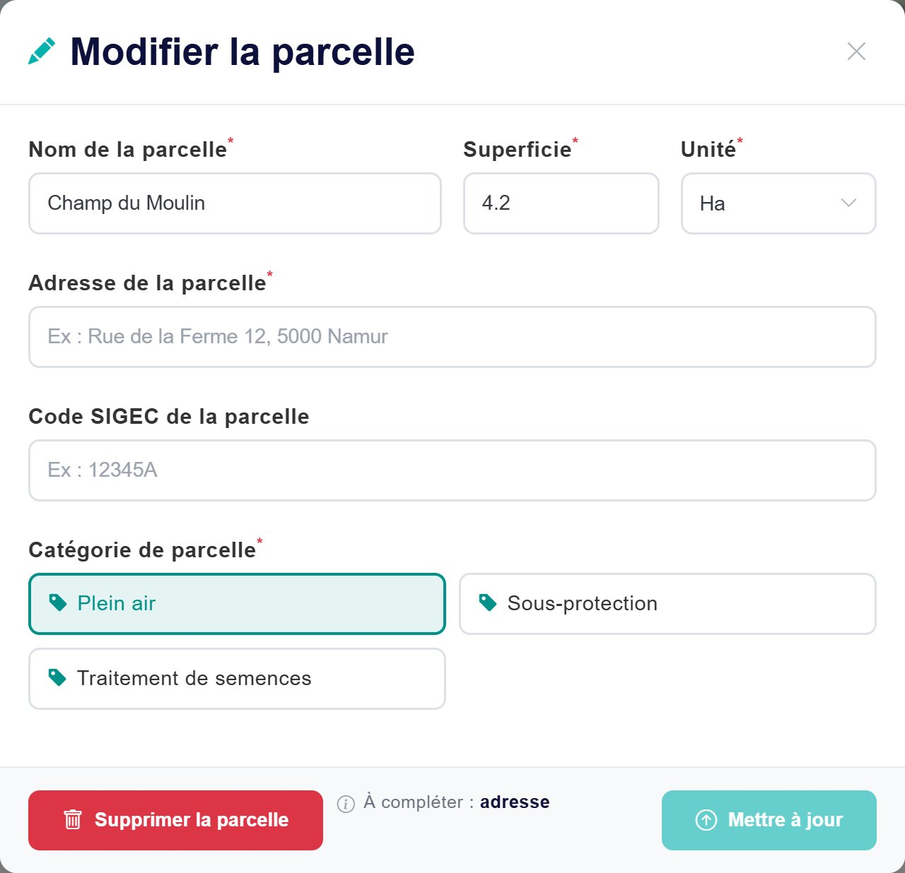
Une parcelle dessinée : ici, l'application demande une adresse.
Une parcelle dessinée vous demande une adresse ?Pour une parcelle dont vous avez dessiné le contour, le formulaire indique « À compléter : adresse » et le bouton Mettre à jour reste pâle. Tapez l'adresse la plus proche de la parcelle (la rue ou le village), choisissez-la dans la liste, puis cliquez sur Mettre à jour. Le contour de la parcelle est conservé.
Renommer une parcelle
Vous pouvez changer le nom d'une parcelle à tout moment. Mais les traitements et travaux déjà encodés gardent l'ancien nom, y compris dans le registre exporté. Le plus simple est donc de donner leur nom définitif à vos parcelles avant de commencer à encoder.
Supprimer des parcelles
Une parcelle : ouvrez-la avec le crayon, puis Supprimer la parcelle. Appi'Field demande confirmation : « Êtes-vous sûr de vouloir supprimer … ? Cette action est irréversible. »
Plusieurs parcelles : cochez-les dans la liste, puis cliquez sur Supprimer la sélection (le nombre de parcelles cochées s'affiche dans le bouton). Confirmez.
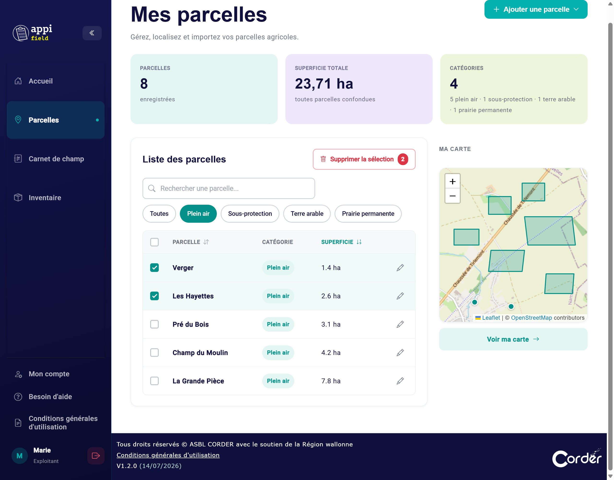
Filtre « Plein air », tri par superficie, et deux parcelles cochées.
La case tout en haut de la liste coche (ou décoche) toutes les parcelles de la page affichée, pas celles des autres pages.
Si certaines parcelles n'ont pas pu être supprimées, un message l'indique (« 3 parcelles supprimées sur 4 »).
Ne supprimez pas une parcelle déjà utiliséeLa suppression est définitive. Si la parcelle a déjà des cultures ou des traitements, ceux-ci restent dans votre carnet, mais l'adresse et les coordonnées de la parcelle disparaissent de leurs lignes dans le registre exporté, alors que la localisation est une information obligatoire. Supprimez seulement une parcelle créée par erreur ou en double, jamais utilisée.
Sur smartphone
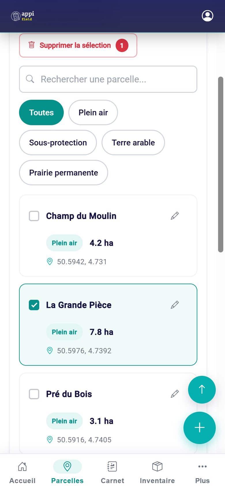
Une carte par parcelle ; la deuxième est sélectionnée.
Chaque parcelle est une carte : nom, catégorie, superficie et localisation (adresse ou coordonnées).
Toucher une carte la sélectionne (pour la supprimer) : elle se colore et sa case se coche. Touchez-la à nouveau pour la désélectionner.
Pour ouvrir une parcelle, touchez son crayon.
Le bouton rond + en bas à droite ouvre le menu « Ajouter une parcelle », en panneau depuis le bas de l'écran.
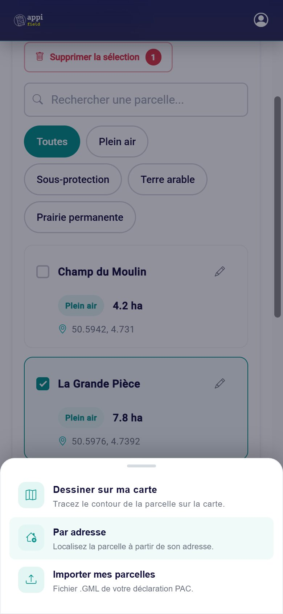
Le menu « Ajouter une parcelle ».
Importer depuis un téléphoneLe menu « Importer mes parcelles » est aussi proposé sur smartphone, mais il faut alors avoir le fichier .gml sur le téléphone. Le plus simple est de faire l'import depuis l'ordinateur où vous avez téléchargé le fichier.
Questions fréquentes sur les parcelles
Je ne trouve pas l'adresse de ma parcelle.
Les champs n'ont souvent pas d'adresse. Tapez seulement la rue la plus proche et la commune, ou le nom du village, et choisissez une proposition. Vous pouvez aussi dessiner la parcelle sur la carte ou placer un point (chapitre 6).
Ma déclaration PAC ne s'importe pas.
Vérifiez que le fichier se termine par .gml et qu'il a été exporté après avoir sauvé et soumis votre déclaration. Voir aussi le tableau des messages ci-dessus.
J'ai mes parcelles en double après un import.
Cochez les doublons et utilisez Supprimer la sélection, avant de les utiliser dans votre carnet.
La superficie importée ne correspond pas exactement à ma déclaration.
Appi'Field calcule la superficie à partir du contour. Vous pouvez la corriger avec le crayon.
Quelle catégorie choisir ?
Celle qui vous aide à vous y retrouver : « Plein air » pour un champ, « Sous-protection » pour une serre ou un tunnel. La catégorie sert au tri et n'apparaît pas dans le registre.